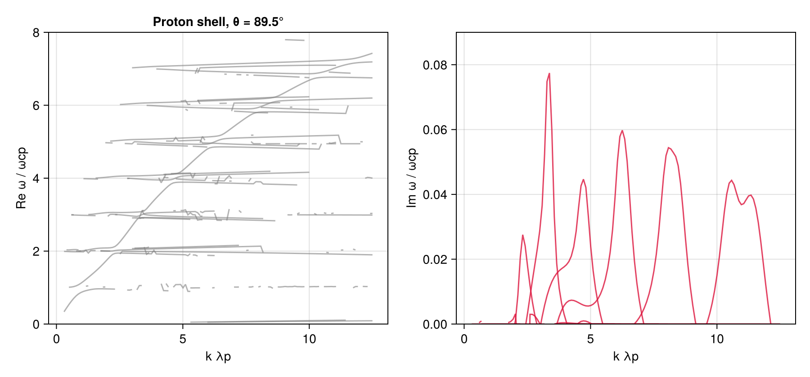

Quasi-perpendicular instability — proton shell (Min & Liu 2015)
Ion Bernstein / fast-magnetosonic harmonics driven by a spherical proton shell. Ref: Min & Liu 2015, also Case 5 in Guo et al. 2026. A tenuous (10%) 1 keV proton shell at shell speed v_d = 2 v_A in a cold proton–electron background, propagating at θ = 89.5°.
The shell f_p ∝ exp[−(v − v_d)²/c_p²] with v = √(v∥² + v⟂²) enters as a general analytic function, wrapped in a LowRankVDF: the shell is numerically rank ~12, and factoring it decouples the perpendicular Bessel moments (ω-independent, hoisted into the per-k plan) from the parallel Landau integral, accelerating dispersion-tensor evaluation.
using VlasovMaxwellDispersion
using DelimitedFiles, Printf
using CairoMakiePlasma setup
SI parameters from the paper's Table I, normalized to the proton gyrofrequency ωcp; velocities in units of c. The electron mass is the table's deliberately heavy m_e = 10⁻² m_p — at quasi-perpendicular propagation the electron dynamics matter, so the reduced mass must be kept.
const c0 = 2.99792458e8
qe = 1.602176634e-19; mp = 1.67262192369e-27
eps0 = 8.8541878128e-12; mu0 = 1.25663706212e-6
B0 = 3.28e-8; me = 1.0e-2 * mp
ns = 0.5e5; nc = 4.5e5; ne = 5.0e5 # shell p⁺ / cold p⁺ / e⁻ [m⁻³]
wcp = qe * B0 / mp
vA = B0 / sqrt(mu0 * (ns + nc) * mp)
vd = 2vA / c0 # shell speed
cp_ = sqrt(2qe * 1000 / mp) / c0 # shell thermal spread (1 keV)
vthc = sqrt(2qe * 10 / mp) / c0 # cold protons (10 eV)
vthe = sqrt(2qe * 10 / me) / c0 # electrons (10 eV)
Pi2s = ns * qe^2 / (eps0 * mp) / wcp^2
Pi2c = nc * qe^2 / (eps0 * mp) / wcp^2
Pi2e = ne * qe^2 / (eps0 * me) / wcp^2
hi = vd + 5cp_
shell = LowRankVDF(
(q, u) -> exp(-(sqrt(q^2 + u^2) - vd)^2 / cp_^2);
para = (-hi, hi), perp = (0.0, hi)
)
plasma = (
NormalizedSpecies(1.0, Pi2s, shell),
NormalizedSpecies(1.0, Pi2c, Maxwellian(vthc)),
NormalizedSpecies(-mp / me, Pi2e, Maxwellian(vthe)),
)(NormalizedSpecies{Float64, LowRankVDF{VlasovMaxwellDispersion.Erased2{Float64, ComplexF64}, VlasovMaxwellDispersion.Erased2{Tuple{Float64, Float64}, Tuple{ComplexF64, ComplexF64}}, VlasovMaxwellDispersion.Erased2{Tuple{Float64, Float64}, Tuple{ComplexF64, ComplexF64}}, Float64, @NamedTuple{n::Float64, pperp2_mean::Float64, para::VlasovMaxwellDispersion.LowRankPara{Float64}, vpan::Vector{Float64}, gl::Int64, rtol::Float64, vprobe::Vector{Float64}, A::Matrix{Float64}, f0max::Float64}}}(1.0, 8779.532118634686, LowRankVDF(rank=12, para=(-0.014049814992093474, 0.014049814992093474), perp=(0.0, 0.014049814992093474))), NormalizedSpecies{Float64, Separable{Gaussian{Float64, Nothing}, Gaussian{Float64, Float64}}}(1.0, 79015.78906771216, Separable{Gaussian{Float64, Nothing}, Gaussian{Float64, Float64}}(Gaussian{Float64, Nothing}(0.0001459992414219262, nothing), Gaussian{Float64, Float64}(0.0001459992414219262, 0.0))), NormalizedSpecies{Float64, Separable{Gaussian{Float64, Nothing}, Gaussian{Float64, Float64}}}(-100.0, 8.779532118634686e6, Separable{Gaussian{Float64, Nothing}, Gaussian{Float64, Float64}}(Gaussian{Float64, Nothing}(0.0014599924142192618, nothing), Gaussian{Float64, Float64}(0.0014599924142192618, 0.0))))Seedless survey
k sweeps k·λ_p ∈ [0.3, 12.5] (λ_p = c/ω_pp = v_A/ω_cp) at θ = 89.5°; the ω box spans the Bernstein harmonic staircase up to ~7.5 ω_cp.
kunit = c0 / vA # k·λ_p → k c/ωcp
region = (0.05 - 0.06im, 7.8 + 0.12im)
geom = AngleSweep(k = range(0.3, 12.5, 128) .* kunit, theta = deg2rad(89.5))
sol = solve(GlobalDispersionProblem(plasma, region, geom))SurveySolution(retcode=Saturated, 179 roots, 171197 evals, 27.6 s)Dispersion diagram
fig = Figure(size = (900, 420))
axr = Axis(fig[1, 1]; xlabel = "k λp", ylabel = "Re ω / ωcp", title = "Proton shell, θ = 89.5°")
axi = Axis(fig[1, 2]; xlabel = "k λp", ylabel = "Im ω / ωcp")
klp(b) = [sqrt(abs2(k)) / kunit for k in b.k]
# linking occasionally hops harmonics; break the polyline at Re-ω jumps
# instead of drawing the connector
function masked(x, ω; dmax = 0.35)
y = collect(ω)
for i in 2:length(y)
abs(real(y[i]) - real(y[i - 1])) > dmax && (y[i - 1] = NaN + NaN * im)
end
return y
end
for b in sol.roots
x = klp(b)
p = sortperm(x)
ω = masked(x[p], b.omega[p])
lines!(axr, x[p], real.(ω); color = (:gray, 0.6), linewidth = 1.5)
lines!(axi, x[p], imag.(ω); color = (:crimson, 0.8), linewidth = 1.5)
end
ylims!(axr, 0, 8); ylims!(axi, 0, 0.09)
fig
This page was generated using Literate.jl.